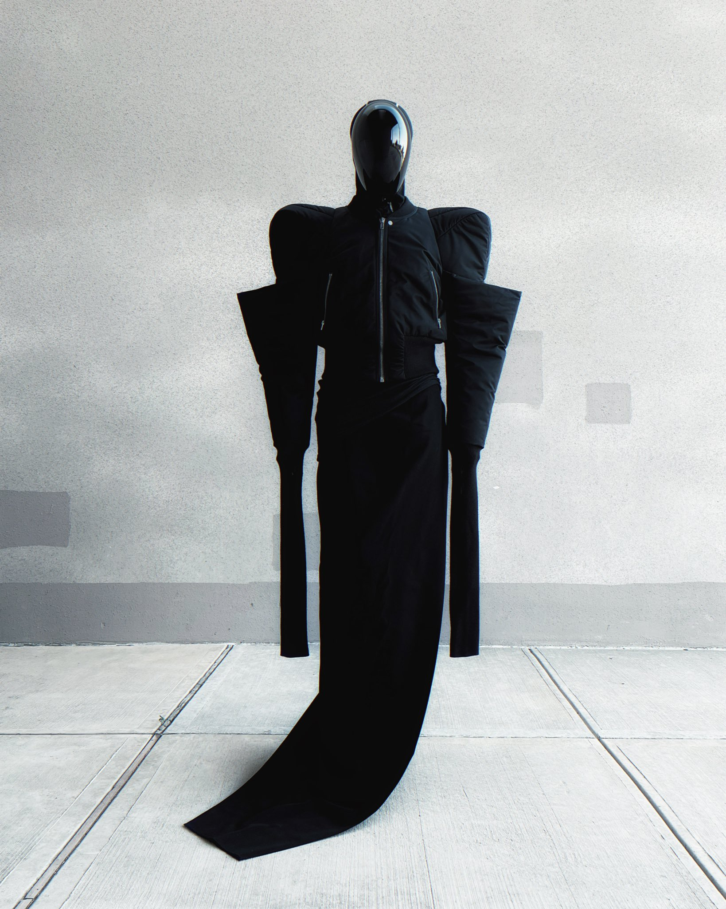

These are some of the artists I look up to and take most of my inspiration from when creating different works of art. Ryoga's art is very distinct and beautifully detailed as he takes a lot of fashion and incorporates it into his work. The one thing I really love is how he takes the fashion of most well known brands and adds his own flare into the characters he drawn them in.

Speaking of fashion, one other person I love watching put different outfits together is Wisdom Kaye. While he doesn't necessarily draw like Ryoga, his unique outfits are inspiring enough to make me want to try experimenting different styles of clothing on my own characters, giving them more depth and dynamic range.
Mfs asked me to make a $50,000 outfit like you can't be serious pic.twitter.com/PP5ei1BwFO
— Wisdom Kaye (@modsiwW) August 21, 2022
When it comes to uniqueness, the moncler brand definitely stands out from the rest. When I was originally researching them, I realized they were mainly known for their shiny puffer jackets, which is what I used for my character in my album art; unfortunately I'm still not as good as I'd like to be with really showing off their shine like they do in their actual jackets.
Another few artists I'd like to reference are the musicians that have helped give me inspiration, such as Moon Sujin and CANDYGIRL. Most of the time their music just helps me stay focused or gives me the motivation to keep working on my art.
Moving onto references for backgrounds, even though I haven't used them in my own work, I do appreciate the artists that have amazing background work, for example Yukinobu Tatsu's recent series on Shonen Jump Plus, DanDaDan and his stylized fish eye lens look for some backgrounds really shows off the depth and stresses the suspense in some of their panels.
| Ryoga | ||
|---|---|---|
| Wisdom | ||
| Tatsu Yukinobu | ||